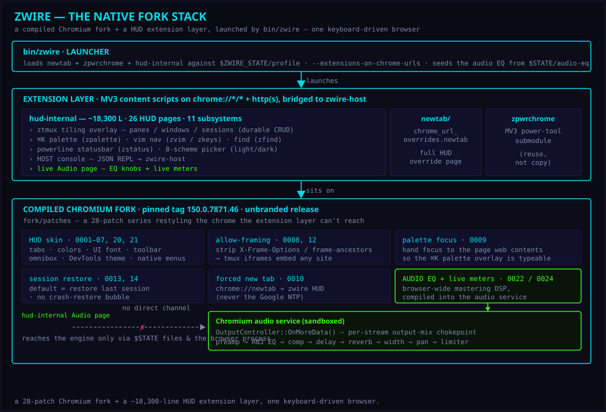

>_ZWIRE REFERENCE
zwire is a Chromium/Blink browser forked into a cyberpunk HUD — a real engine running a keyboard-driven workspace: a tmux-style tiling overlay where every pane is an embedded webview, a âK command palette, vim navigation, durable session management, a browser-wide audio EQ + live meters, and HUD reimplementations of Chrome's own internal pages. The hud-internal extension layer is ~7,400 lines across 11 subsystems and 15 pages; under it, a 24-patch native fork restyles the chrome the extension layer can't reach. For patch-by-patch numbers see the Engineering Report.
A TILING, PALETTE-DRIVEN BROWSER ON A REAL BLINK ENGINE.
ZTMUX TILING · âK PALETTE · SESSION CRUD · 8-SCHEME HUD · BROWSER-WIDE AUDIO EQ · 24-PATCH NATIVE FORK
#WHAT IT IS
A keyboard-driven cyberpunk workspace on a genuine Blink engine — a HUD extension layer compiled into a native fork.
Tiling HUD workspace
The ztmux overlay: tmux-style tiling where every pane is an embedded webview — unlimited windows, recursive splits, zoom, layouts + preset grids, copy-mode, marks, and partial synchronize-panes. Rebindable prefix, 45 remappable actions.
Sessions · palette · vim
Durable named sessions (windows/panes/webviews) with full CRUD + SVG layout previews. A âK command palette, vim-style motions, a find bar, a powerline status bar, a light/dark toggle, and HUD reimplementations of Chrome's internal pages — 15 pages in all.
Browser-wide audio engine
An always-on zdsp-core chain — parametric EQ + channel strip + saturation/dynamics (waveshaper, exciter, bit-crush, gate, compressor, auto-wah) + modulation (chorus, flanger, phaser, ring-mod, tremolo) + time FX (delay, reverb) + spatial (Haas, cross-feed, auto-pan, width) + brickwall limiter — compiled into the audio service (patches 0022–0024) so every stream (media, MSE/YouTube, Web Audio, WebRTC) is processed before the OS device, live-reconfigurable with nothing open. A live Audio HUD page renders the real post-DSP spectrum, meters, and stereo scope over the native host — no tabCapture.
Lifecycle hooks
Bind stryke scripts to ~50 browser events — tab / window / navigation / download / bookmark / history / terminal / scheme / audio / ⌘K-command lifecycle, plus an action catch-all. The service worker fires them and zwire-host runs each enabled hook whose event matches, dispatching the script's {actions} (notify / open / exec / pub). A Hooks HUD page with a searchable event picker and a Monaco + stryke-LSP editor.
Native 24-patch fork
The source build zwire ships as. A C++ patch series restyles the native chrome the extension layer can't reach: tab shapes, UI font, neon toolbar, omnibox, product strings, the 8 HUD schemes in the color mixer + DevTools, native Views menus/dialogs — plus allow-framing for the tiling overlay, âK-palette focus hand-off, a forced zwire new-tab, session restore, and the browser-wide audio EQ + meters.
Dedicated profile
Everything runs against $ZWIRE_STATE/profile (default ~/Library/Application Support/com.menketechnologies.zwire on macOS) — bookmarks, history, sessions kept separate from system Chrome.
@WHY A REAL BLINK BASE
zpwrchrome is a Manifest V3 extension needing userScripts, declarativeNetRequestWithHostAccess, nativeMessaging, webRequest, a service-worker background, and minimum_chrome_version: 127. None of that runs on WebKit (Tauri/Safari) or Servo — only a genuine Chromium engine loads it.
The fork compiles unbranded (is_chrome_branded=false) — no Google logo, no "for automated testing" banner (that stripe is exclusive to Chrome for Testing). A Chromium build also keeps the --load-extension switch that preloads zpwrchrome, removed from branded Chrome in v137. Stock Google Chrome can no longer be scripted this way; a Chromium build can.
&ARCHITECTURE
Layered from the compiled fork base, up through the HUD workspace, to the native chrome the fork restyles.
| Component | Role |
|---|---|
| Base | The compiled fork/ build — a patched Chromium (pinned tag 150.0.7871.46), unbranded release. This is what zwire ships as. |
| Rebrand | scripts/rebrand-macos.sh patches the base bundle's Dock name to zwire + a cyberpunk .icns, deletes CFBundleIconName, and re-signs ad-hoc so macOS honors it. |
| Theme | theme/ — a Chrome theme mapping the HUD palette onto frame / toolbar / tabs (colors only). Present but not launcher-loaded: a static theme applies last and would override the fork's color mixer (0002) and the internal-HUD skin. |
| New tab | newtab/ — a chrome_url_overrides.newtab extension: the full HUD (Orbitron, CRT scanlines, neon omnibox), fonts vendored locally. |
| HUD workspace | extensions/hud-internal (~7,400 LOC) — the ztmux tiling overlay (two thin adapters, ztmux-config.js + ztmux-pane.js, driving ZGui.tmux; each pane an embedded webview; rebindable prefix; partial synchronize-panes; durable session CRUD), the âK palette (zpalette), vim nav + keymap (zvim/zkeys), find (zfind), the powerline status bar (zpowerline.js feeding ZGui.powerline), the 8-scheme picker (with light/dark toggle), and 15 HUD pages (incl. Sessions, a Hooks page, a Keyboard remapper, a Host console, an App Store + a live Audio page). MV3 content scripts on chrome://*/* + http(s), bridged to a native host. Needs --extensions-on-chrome-urls. |
| GUI toolkit | extensions/hud-internal/lib/zgui-core — the shared ZGui component library (253 webui/* modules incl. ZGui.tmux, palette, powerline, fzf, colorscheme, and the audio meter chain), a submodule loaded straight from path (never copied). Every HUD page composes ZGui components; zwire supplies only the glue. |
| Native host | extensions/hud-internal/native/zwire-host — a single self-contained Rust binary (native-messaging host + Unix-socket NDJSON daemon: sysmon, fs, exec, PTY, KV, hooks, OS ops), its own submodule. Backs the Host console, feeds the powerline stats, and is the filesystem bridge for the audio EQ/meters. |
| Power-tool | extensions/zpwrchrome — the MV3 extension, loaded as a submodule (reuse, not copy). |
| Launcher | bin/zwire starts the base against $ZWIRE_STATE/profile with newtab + zpwrchrome + hud-internal loaded and --extensions-on-chrome-urls set. Any dir missing a manifest.json is skipped, so a missing submodule degrades gracefully. |
| Fork | fork/ — the source build zwire ships as: a 24-patch series restyles native tabs, colors, UI font, toolbar, omnibox, the DevTools Theme dropdown, and native Views menus/dialogs, plus allow-framing, âK-palette focus, a forced zwire new-tab, session restore, and a browser-wide audio EQ + live meters. |
◱HUD & FORK DIAGRAMS
The keyboard-driven surfaces and the native fork, as architecture diagrams. For the whole stack and 30+ more, see the illustrated invention ledger.



♪AUDIO ENGINE — IPC TOPOLOGY
How the HUD Audio dashboard, zwire-host, the $STATE files, the browser process, and the sandboxed audio service communicate for the browser-wide output DSP (patches 0022/0024). zwire-host and the audio service share no direct channel — the file is the rendezvous and the browser is the only party on both sides (filesystem + mojom).
$INSTALL
Clone with submodules, run the installer, launch. Re-run install.sh after a base upgrade.
~THE NATIVE FORK
The HUD workspace — tiling, palette, sessions, vim, the 8-scheme picker — is extension code. But a theme extension changes colors only; it can't reshape tabs, fonts, or the toolbar (native C++). To put the whole chrome in the HUD, zwire is compiled from a patched Chromium — this is what it ships as.
The fork/ build is a 24-patch series (trapezoid tabs, cyberpunk palette, mono UI font, neon toolbar, sharp omnibox, zwire strings, 8 HUD schemes in the color mixer + DevTools, native Views menus/dialogs bound to the HUD palette, allow-framing for the ztmux overlay, âK-palette focus hand-off, a forced zwire new-tab, session restore, and a browser-wide audio EQ + live output meters) authored against the pinned tag and verified apply-clean. It costs a ~100 GB checkout, a 1–4 hr first build, and ongoing rebase maintenance — no paid infra needed, but it won't fit on stock GitHub-hosted runners (checkout > disk, cold build > the 6 h job cap), so build it locally or on a self-hosted runner with a warm checkout. See fork/ and the Engineering Report.